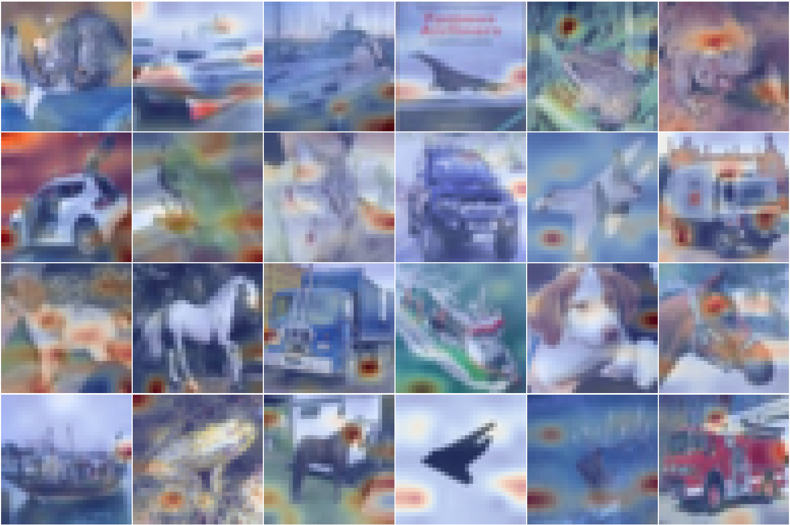
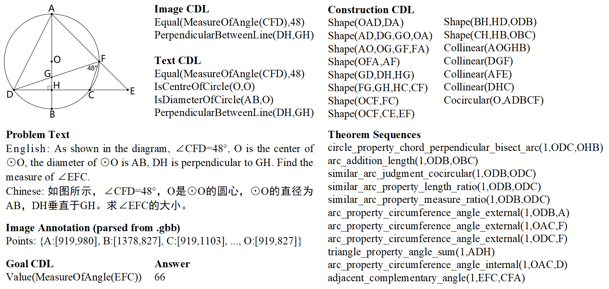
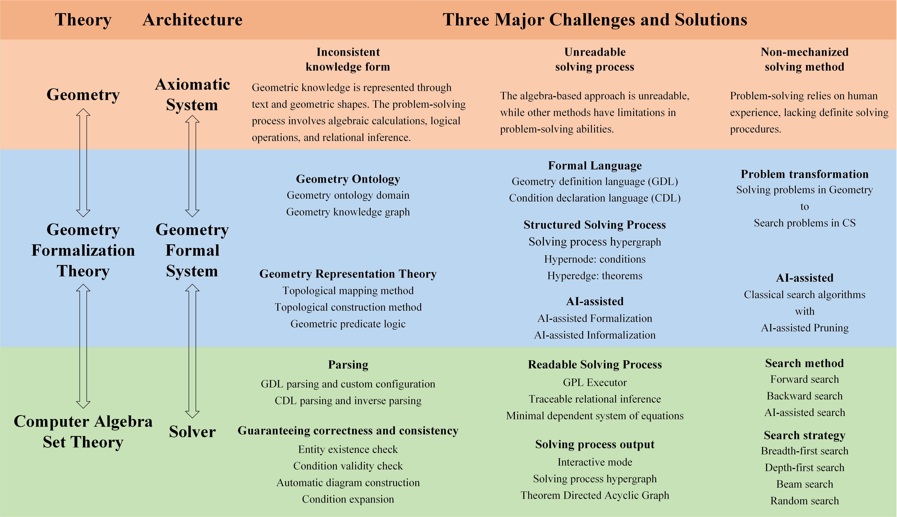
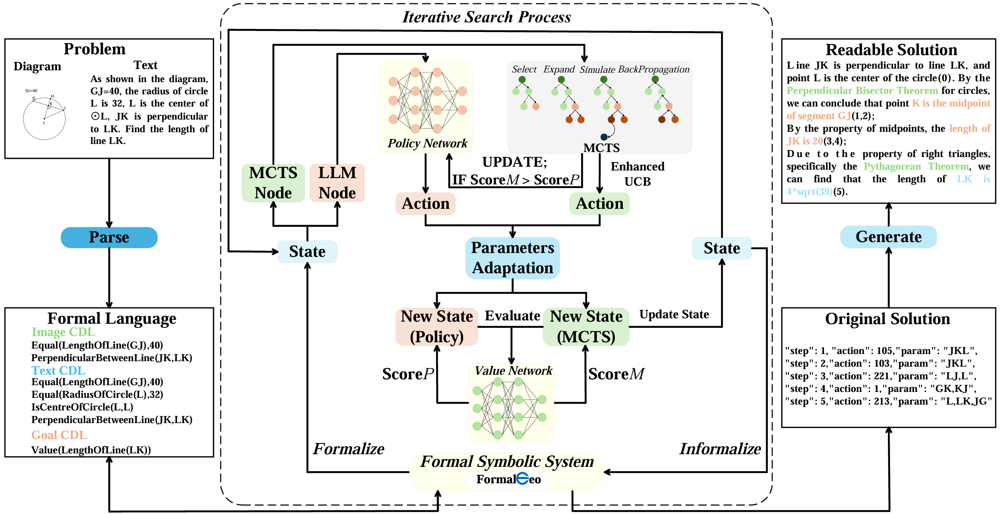
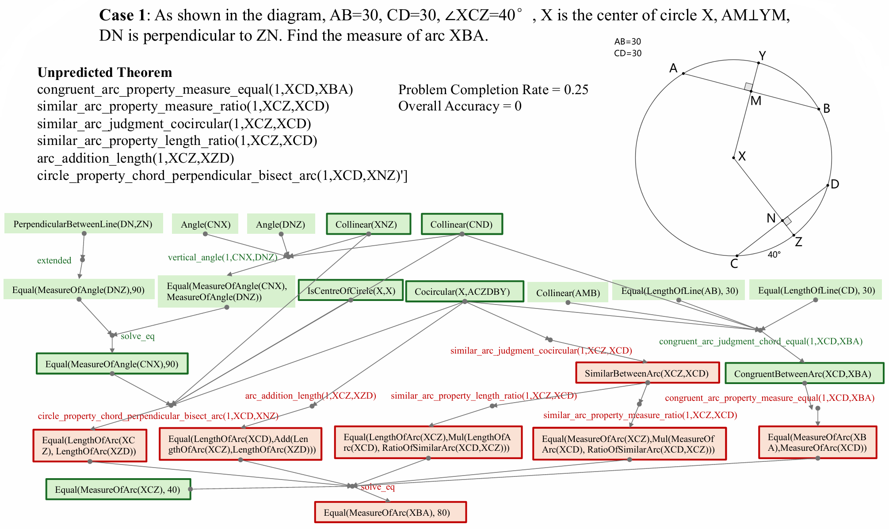
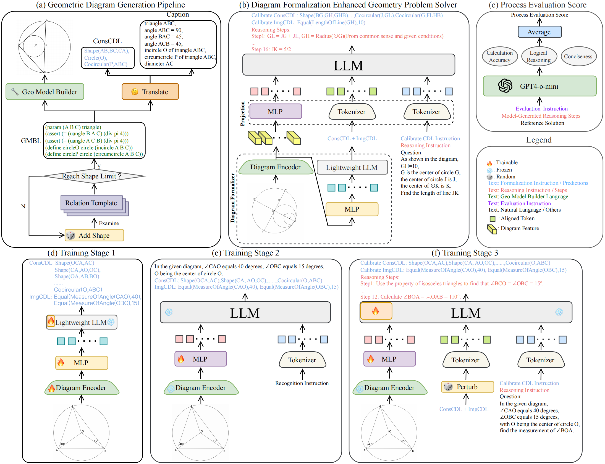
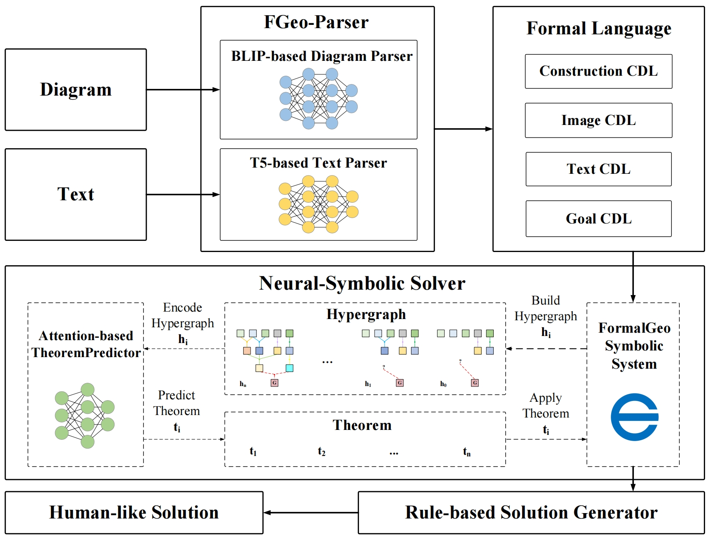
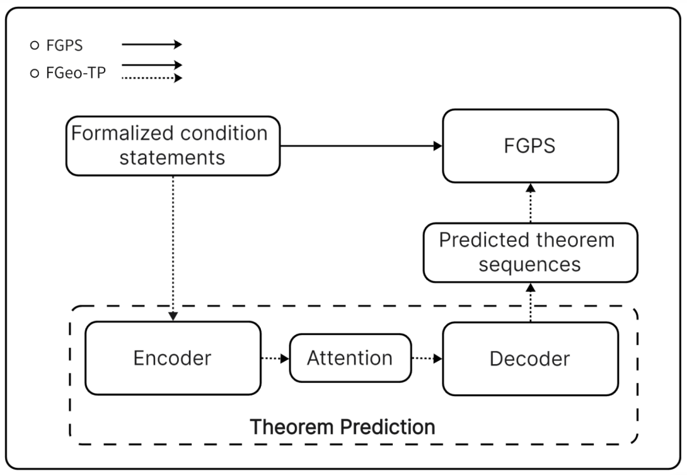
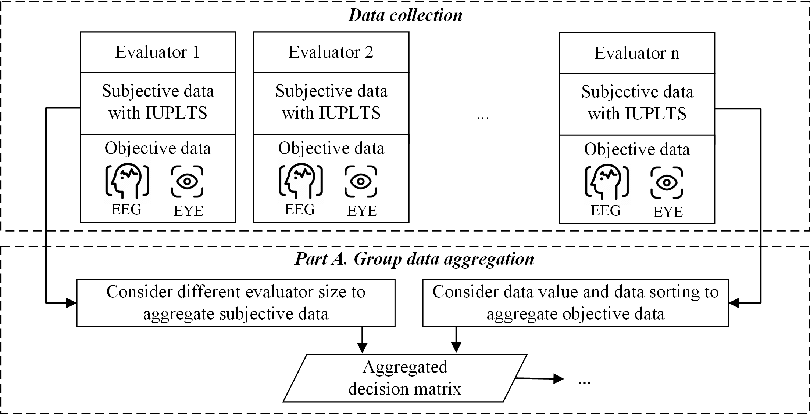

Publications
-

A Simple Method for Attention Visualization
Xiaokai Zhang
This paper formally defines the concepts of intra-token information mixing and inter-token information mixing, while proposing a visualization analysis method based on attention matrix forward propagation. The proposed method achieves interpretable analysis of Transformer model decision-making processes by quantitatively measuring the contribution of different input tokens to model outputs.
Preprint 2025 [Paper] [Project] [BibTex]
-
 🔥FGeo-HyperGNet: Geometric Problem Solving Integrating FormalGeo Symbolic System and Hypergraph Neural Network
🔥FGeo-HyperGNet: Geometric Problem Solving Integrating FormalGeo Symbolic System and Hypergraph Neural Network
Xiaokai Zhang, Yang Li, Na Zhu, Cheng Qin, Zhenbing Zeng, Tuo Leng
We built a neural-symbolic system to automatically perform human-like geometric deductive reasoning. The symbolic part is a formal system built on FormalGeo and the neural part is a hypergraph neural network based on the attention mechanism.
IJCAI 2025 [Paper] [Project] [BibTex]
-

🔥Formal Representation and Solution of Plane Geometric Problems
Xiaokai Zhang, Na Zhu, Cheng Qin, Yang Li, Zhenbing Zeng, Tuo Leng
In this paper, we present formalgeo7k, a geometric problem dataset based on rigorous geometry formalization theory and consistent geometry formal system, serving as a benchmark for various tasks such as geometric diagram parsing and geometric problem solving.
NeurIPS 2024 Workshop on MATH-AI [Paper] [Project] [BibTex]
-
 FGeo-SSS: A Search-Based Symbolic Solver for Human-Like Automated Geometric Reasoning
FGeo-SSS: A Search-Based Symbolic Solver for Human-Like Automated Geometric Reasoning
Xiaokai Zhang, Na Zhu, Yiming He, Jia Zou, Cheng Qin, Yang Li, Tuo Leng
Based on the geometry formalization theory and the FormalGeo geometric formal system, we have developed the Formal Geometric Problem Solver (FGPS) in Python, which can serve as an interactive assistant for verifying problem-solving processes and as an automated problem solver that utilizes a variable search-based method and strategy.
Symmetry 2024 [Paper] [Project] [BibTex]
-

🔥FormalGeo: An Extensible Formalized Framework for Olympiad Geometric Problem Solving
Xiaokai Zhang, Na Zhu, Yiming He, Jia Zou, Qike Huang, Xiaoxiao Jin, Yanjun Guo, Chenyang Mao, Zhe Zhu, Dengfeng Yue, Fangzhen Zhu, Yang Li, Yifan Wang, Yiwen Huang, Runan Wang, Cheng Qin, Zhenbing Zeng, Shaorong Xie, Xiangfeng Luo, Tuo Leng
We have constructed a complete and compatible formal plane geometry system. This will serve as a crucial bridge between IMO-level plane geometry challenges and readable AI automated reasoning. With this formal system in place, we have been able to seamlessly integrate modern AI models with our formal system.
arxiv:2310.18021 [Paper] [Project] [BibTex]
-

💥FGeo-ISRL: A MCTS-Enhanced Deep Reinforcement Learning System for Plane Geometry Problem-Solving via Inverse Search
Yang Li, Xiaokai Zhang, Qin Cheng, Zhengyu Hu, Tuo Leng
To address the efficiency degradation and limited generalization, we propose FGeo-ISRL, a neural-symbolic inverse search framework whose core is the synergistic integration of a task-fine-tuned large language model and Monte Carlo Tree Search.
Symmetry 2026 [Paper] [Project] [BibTex]
-

💥A Hybrid Framework for Automated Geometric Problem-Solving by Integrating Formal Symbolic Systems and Deep Learning
Zhengyu Hu, Xiaokai Zhang, Qin Cheng, Yang Li, Tuo Leng
To address the limitations of unidirectional approaches, we developed a neuro-symbolic system that integrates forward and backward reasoning.
Symmetry 2026 [Paper] [Project] [BibTex]
-

FGeo-Eval: Evaluation System for Plane Geometry Problem Solving
Qike Huang, Xiaokai Zhang, Na Zhu, Fangzhen Zhu, Tuo Leng
We propose FGeo-Eval, a comprehensive evaluation system for plane geometry problem solving. The evaluation system includes a problem completion rate (PCR) metric to assess partial progress, theorem weight computation to quantify knowledge importance, and a difficulty coefficient based on reasoning complexity.
Symmetry 2025 [Paper] [BibTex]
-

Diagram Formalization Enhanced Multi-Modal Geometry Problem Solver
Zeren Zhang, Jo-Ku Cheng, Jingyang Deng, Lu Tian, Jinwen Ma, Ziran Qin, Xiaokai Zhang, Na Zhu, Tuo Leng
We introduce the Diagram Formalization Enhanced Geometry Problem Solver (DFE-GPS), a new framework that integrates visual features, geometric formal language, and natural language representations. We propose a novel synthetic data approach and create a large-scale geometric dataset, SynthGeo228K, annotated with both formal and natural language captions, designed to enhance the vision encoder for a better understanding of geometric structures.
ICASSP 2025 [Paper] [Project] [BibTex]
-

FGeo-Parser: Autoformalization and Solution of Plane Geometric Problems
Na Zhu, Xiaokai Zhang, Qike Huang, Fangzhen Zhu, Zhenbing Zeng, Tuo Leng
In this paper, we propose an enhanced geometric problem parsing method called FGeo-Parser, which converts problem diagrams and text into the formal language of the FormalGeo. Specifically, diagram parser leverages the BLIP to generate the construction CDL and image CDL, while text parser employs the T5 to produce the text CDL and goal CDL where these neural networks are both based on a symmetric encoder–decoder architecture. It also supports reverse formalization to generate human-like solutions, reflecting the symmetry between parsing and generating.
Symmetry 2024 [Paper] [Project] [BibTex]
-
 FGeo-DRL:Deductive Reasoning for Geometric Problems through Deep Reinforcement Learning
FGeo-DRL:Deductive Reasoning for Geometric Problems through Deep Reinforcement Learning
Jia Zou, Xiaokai Zhang, Yiming He, Na Zhu, Tuo Leng
We built a neural-symbolic system, called FGeoDRL, to automatically perform human-like geometric deductive reasoning. The neural part is an AI agent based on reinforcement learning and the symbolic part is a reinforcement learning environment based on geometry formalization theory and FormalGeo.
Symmetry 2024 [Paper] [Project] [BibTex]
-

FGeo-TP: A Language Model-Enhanced Solver for Geometry Problems
Yiming He, Jia Zou, Xiaokai Zhang, Na Zhu, Tuo Leng
we introduced FGeo-TP (Theorem Predictor), which utilizes the language model to predict theorem sequences for solving geometry problems. Our results demonstrate a significant increase in the problem-solving success rate of the language model-enhanced FGeo-TP on the FormalGeo7k dataset, rising from 39.7% to 80.86%.
Symmetry 2024 [Paper] [Project] [BibTex]
-

A method for product appearance design evaluation based on heterogeneous data
Han Lai, Zheng Wu, Xiaokai Zhang, Huchang Liao, Edmundas Kazimieras Zavadskas
This study proposes different methods to determine subjective and objective weights of criteria regarding the self-reporting, eye-tracking, and electroencephalogram data for the evaluation of product appearance design.
AEI 2023 [Paper] [Project] [BibTex]